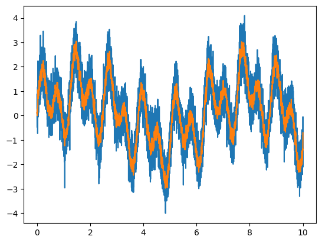
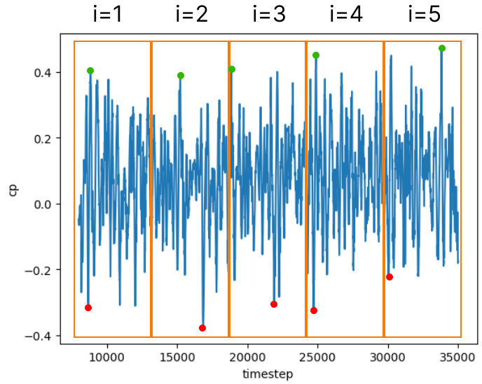

Statistics#
For every coefficient signal, some statistical operations are performed in order to extract value from the data.
Minimum and maximum values#
Finding the minimum and maximum values is pretty straightforward. For example, the minimum and maximum values of a generic signal (\(x\)) is:
Sometimes it may be necessary to divide the time series in order to make it memory efficient.
Thus the minimum and maximum values are computed for each subdivision (\(n\)), and the global minimum and maximum values are defined as:
Average value#
The mean value is obtained by a sum over the signal, divided by how many samples there are. For example, the mean value of a generic signal (\(x\)) is:
Where \(t\) is temporal variable, and \(T\) is the sample total time. For discrete signal \(N\) is the size of the sample.
As mentioned before, the sample can be subdivided in \(n\) subsamples. Thus to compose the global average (\(\mu\)) from each subdivision average, a weighted average must be performed based on each subdivision size \(N_n\):
Ensemble Average#
The ensemble average of signal fluctuations is a statistical measure that involves averaging the values of a signal across multiple instances or repetitions of an experiment or observation.
The ensemble average \(\langle x'(t) \rangle\) of the fluctuation of a signal \(x(t)\) is calculated by averaging the corresponding values across different trials or instances, for a m-th order moment:
The following statistical operations use higher order moments.
Root Mean Square value#
The next statistic value is the Root Mean Square (RMS) value of a coefficient signal. It measures the magnitude of a varying quantity. The RMS value is a way to represent the “effective” or “equivalent” value of a varying quantity. For example, the RMS value of a generic signal (\(x\)) is:
Where \(\mu\) is the global average and \(N\) is the number of time step samples.
It can also be defined based on the ensemble average of the signal fluctuation (\(x'\)):
The global RMS value for subdivided samples is computed cumulating the second-order moment.
For each subdivision, the second-order moment is calculated as:
Then the global RMS value is defined as:
Skewness#
Skewness, a third-order statistical moment, characterizes the asymmetry of the signal’s probability distribution. A positive skewness indicates a longer tail on the right side of the distribution, while negative skewness suggests a longer left tail.
For example, the skewness value of a generic signal (\(x\)) is:
Where \(\mu\) is the global average.
The global skewness value for subdivided samples is computed cumulating the second and third-order moment.
Then the global skewness value is defined as:
Kurtosis#
Kurtosis, a fourth-order moment, measures the “tailedness” of the signal’s distribution. A high kurtosis indicates heavy tails and a more peaked distribution, suggesting the presence of outliers or extreme values. In the other hand, low kurtosis indicates lighter tails and a flatter distribution.
For example, the kurtosis value of a generic signal (\(x\)) is:
Where \(\mu\) is the global average.
The global kurtosis value for subdivided samples is computed cumulating the second and fourth-order moment.
Then the global kurtosis value is defined as:
Extreme values#
Extreme value analysis is a statistical approach used to analyze the behavior of extreme events in a dataset. In the context of CFD simulations, particularly for pressure coefficient signals, understanding extreme events is crucial for designing structures and systems that can withstand extreme conditions.
Extreme events in pressure coefficient signals often represent critical scenarios such as peak loads on structures or components. The analysis involves fitting extreme value distributions to the data and extrapolating to estimate the occurrence of extreme events beyond the observed range.
Currently, cfdmod supports three peak-factor estimators for the
min / max columns of the stats:
Absolute: raw signal min/max, no model.
Peak factor:
xtr = avg +/- peak_factor * rms.Gumbel: extreme-value fit on the maxima / minima of the signal’s subdivisions.
(Moving-average smoothing is no longer a peak-factor method - it is a distinct pipeline step. See Filters below.)
The following configuration illustrates how to select and configure the appropriate model:
statistics:
- stats: "mean"
- stats: "rms"
- stats: "skewness"
- stats: "kurtosis"
- stats: "mean_eq"
params:
scale_factor: 0.61
- stats: "min"
params:
method_type: "Absolute"
- stats: "max"
params:
method_type: "Gumbel"
peak_duration: 3 # in seconds
event_duration: 600 # in seconds. Period of extreme event
n_subdivisions: 10 # Number of subdivisions
non_exceedance_probability: 0.78 # Confidence parameter in %
- stats: "max"
params:
method_type: "Peak"
peak_factor: 3 # xtr = avg +- factor * rms
Filters (smoothing as a pipeline step)#
In wind engineering it is sometimes desirable to smooth a coefficient
signal so that the peak values are in the same order as the event time
scale (atmospheric wind gusts peak for about 3 s under NBR-6123, for
example). In cfdmod this is exposed as a separate first-class step
on the timeseries – not as a stats method – so the smoothing decision
is explicit, traceable, and reusable across stats configurations.
- id: cp_smoothed
kind: moving_average
source: cp_t
field: cp
window: 3.0 # window in input time units
out: cp
The step writes a smoothed cp field onto the same data source, which
downstream steps (Cf, Cm, statistics) then consume in place of the raw
Cp. Because the step lives in the template, the smoothing decision is
recorded alongside every other op that produced the output.
The window is in the same units as the source’s time axis (raw solver
time by default; convective time if a rescale step normalized it
first). The op does no implicit unit conversion. The image below
illustrates the effect of a moving average on a noisy signal:
{kind=link}

Gumbel model#
The Gumbel model is a widely used statistical model in extreme value theory for predicting the probability distribution of extreme values.
To determine the extreme values of a coefficient time series, the sample obtained by the simulation is subdivided according to a characteristic design interval. This interval is related to the duration of the events that are relevant for the structure design.
{kind=link}

Then the peak values of each subdivided sample are computed, and ordered progressively, for the positive peak values, and regressively, for the negative peak values.
The last step is to fit the Gumbel PDF to the ordered data, and compute the extreme value for the reduced variable related to a probability of exceeding the peak value. Firstly the extreme values for the samples are tabulated as follows:
Sample number (i) |
min (cp) |
max (cp) |
Reduced variable (y) |
|---|---|---|---|
1 |
-0.3 |
0.4 |
y(1) |
2 |
-0.4 |
0.38 |
y(2) |
3 |
-0.28 |
0.41 |
y(3) |
4 |
-0.31 |
0.43 |
y(4) |
5 |
-0.2 |
0.45 |
y(5) |
The reduced variable \(y\) is defined as:
Where \(i\) indicates the subdivided sample index, \(N\) is the number of subdivided samples, and \(P(i)\) is a weighting value for the sample.
Then the values are ordered, and the Gumbel model is fit by:
Where \(\beta\) and \(\mu\) are parameters of the fit. The value for reduced variable \(y\) commonly used is 1.4, resulting in 78% of non-exceeding extreme values.
The method consists of the following steps:
Subdivide the coefficient time series into samples
Compute the extreme values for each sample and order them
Fit Gumbel PDF model to the data
Calculate the extreme value of the time series with a probability of exceeding this value for positive and negative values
Note
For more information about extreme values for structure design, check out Chapter 13 (Wyatt[1])
Peak Factor#
Using this method, the extreme value is calculated provided a peak factor \(f\). Peak value is then defined using the RMS \(\tilde{x}\) and average values \(\bar{x}\). The expression for calculation is as follows:
Mean Equivalent#
There are two ways of composing the wind load from coefficient data. The first one is to use mean pressure distribution, and the dymanic pressure, which is based on the peak base wind velocity. The definition of the first mode of peak wind load is:
Where \(\hat{P}\) is the design peak load, \(\hat{q}\) is the peak dynamic pressure, \(\rho\) is the fluid density and \(\hat{V_0}\) is the peak wind velocity.
For structure design purposes, the mean value of the coefficient time series can be misleading. Thus the peak wind load can be composed by the peak value for the coefficient and the dynamic pressure, which is based on the mean base wind velocity. The definition of the second mode of peak wind load is:
Where \(\bar{q}\) is the average dynamic pressure, \(\rho\) is the fluid density and \(\bar{V_0}\) is the average wind velocity.
However, the peak value for the coefficient needs to be scaled according to the characteristic event duration. This correction is performed using the values for the statistical factors (\(S_2\)) from the Nbr[2] 6123. The correction factor is defined as:
The mean equivalent value is the worst case between the mean value and the extreme values scaled by the statistical factors. For example, the mean equivalent value of a pressure coefficient signal is defined as:
Important
The sign of the mean equivalent value is the same as the value correspondent to the maximum absolute value between the mean, extreme maximum and extreme minimum values.